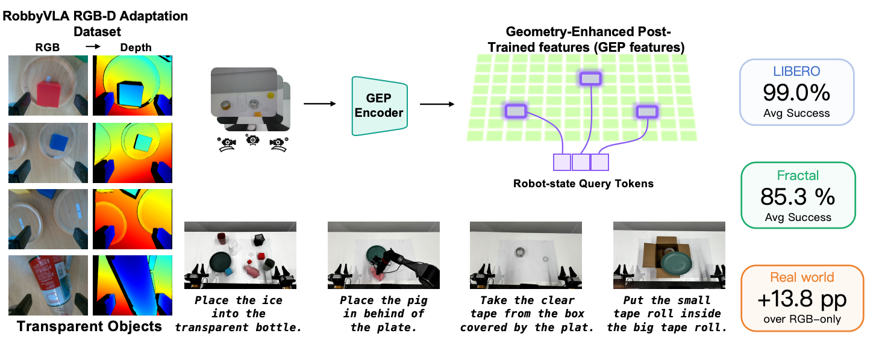
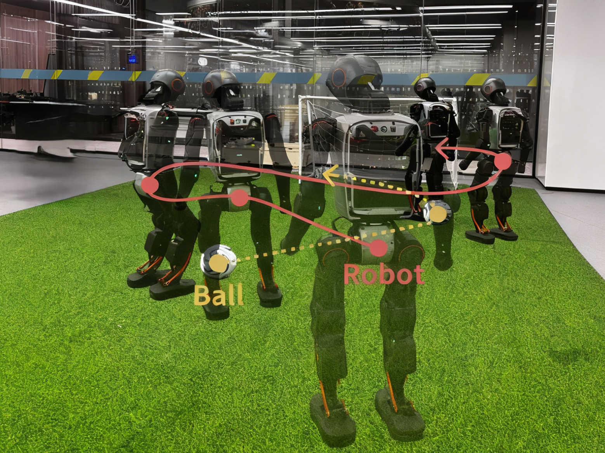
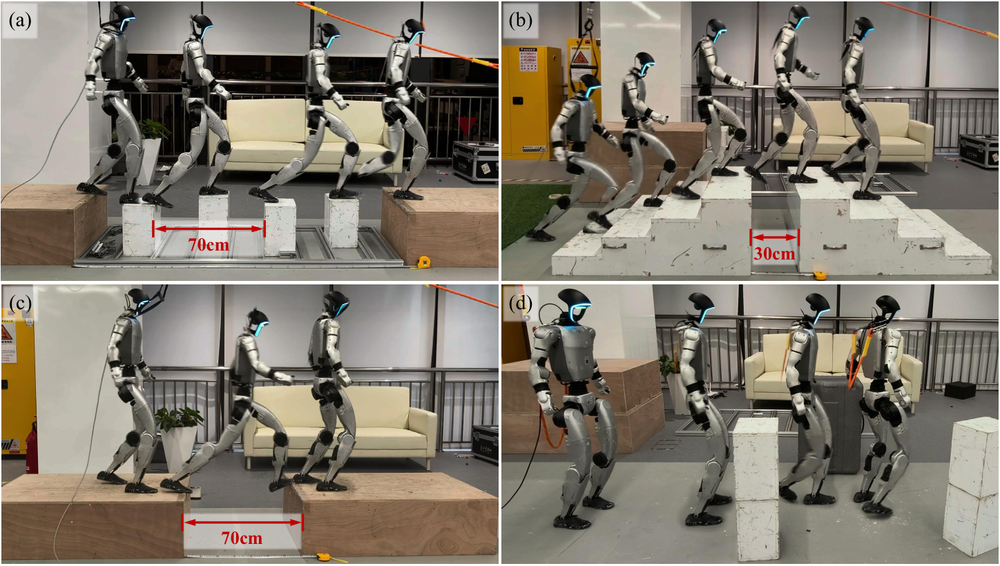

GeoAlign: Beyond Semantics with State-Guided Spatial Alignment in VLA Models
Bringing geometry into VLA policies through robot-state-guided spatial alignment for precise manipulation.
ROBOT LEARNING & EMBODIED INTELLIGENCE
Ph.D. Student
Tongji University Shanghai Innovation Institute
I study how robots perceive the world
and learn to act within it.
My research connects geometry-aware vision-language-action models, humanoid locomotion, and reinforcement learning — with a focus on reliable behavior in the real world.
RESEARCH FOCUS
FROM PERCEPTION TO ACTION

Bringing geometry into VLA policies through robot-state-guided spatial alignment for precise manipulation.

Connecting visual decisions and low-level motion skills so a robot can approach, align, dribble, and kick.

Separating broad terrain awareness from precise foothold selection for perceptive humanoid locomotion.
BEYOND SIMULATION
From learning a policy
to making it work in the world.
01 / PERCEPTION & CONTROL
I led a four-person team working on wheel-legged control and perceptive walking, covering DreamWaQ reproduction, state estimation, depth-camera perception, and LiDAR elevation maps.
02 / REAL-WORLD EVALUATION
Hands-on testing and failure localization across Unitree B2W, Go2, Go2W, G1, Honor wheel-legged robots, and ALOHA dual-arm platforms, spanning motion control and task evaluation.
GET IN TOUCH
For conversations about robot learning,
embodied intelligence, and research.
Tongji University · Shanghai Innovation Institute